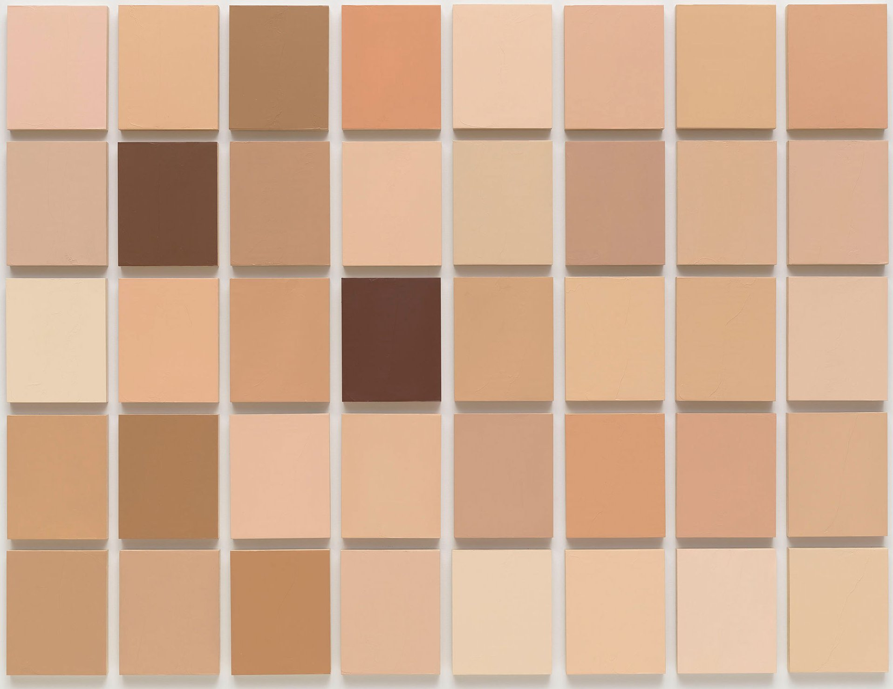
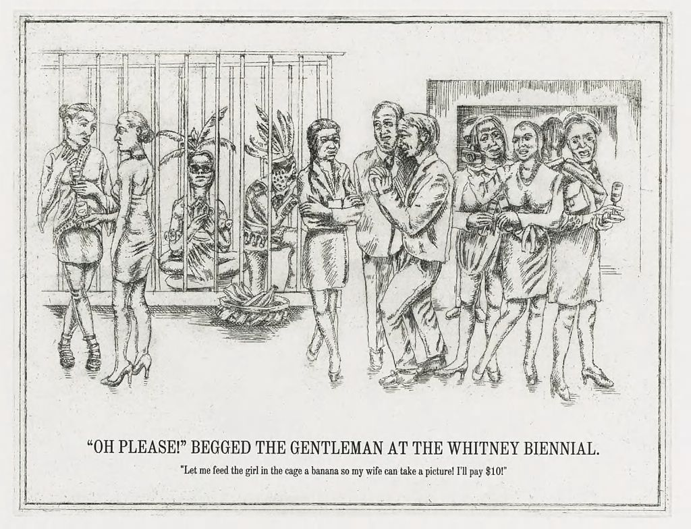

Race. A four-letter word. The greatest social divide in American life, a half-century ago and today.
During that time, the U.S. has seen the most dramatic demographic and cultural shifts in its history, what can be called the colorization of America. But the same nation that elected its first Black president on a wave of hope―another four-letter word―is still plunged into endless culture wars.
How do Americans see race now? How has that changed―and not changed―over the half-century? After eras framed by words like "multicultural" and "post-racial," do we see each other any more clearly?
Who We Be remixes comic strips and contemporary art, campus protests and corporate marketing campaigns, Martin Luther King, Jr. and Trayvon Martin into a powerful, unusual, and timely cultural history of the idea of racial progress. In this follow-up to the award-winning classic Can't Stop Won't Stop: A History of the Hip-Hop Generation, Jeff Chang brings fresh energy, style, and sweep to the essential American story.
Quotes and thoughts while reading:
This book was something of a doozy - pretty heavy, with a lot of history and depth into the art world. The Whitney Biennial from the early 90's kept coming up - which I read about in school - but never fully understood until this book. Like Racing to Justice this book clarified a lot of the things I thought I knew - and taught me many new things. Let's jump in.
" 'The complexities of race in this country that we've never really worked through,' Obama said, remained 'a part of our union that we have yet to perfect.' If Americans could move forward on race, he seemed to say, they could move forward on anything." (p. 1) This speaks to the same philosophy john powell has. When approached with questions regarding climate change, the world economy, it always comes down to dealing with race first. When we have dealt with that - then everything else will fall into place / we will have worked on something so hard that we'll have a way forward on those other avenues.
"Difference is human, and noticing difference is human." (p. 3) Humans are difference engines - it's what we are taught from the earliest way. We ask questions pointing out which things are like the other, and which are not. The problem with this stems from the idea that "historically, skin tone and physiognomy signaled not only difference, but notions of superiority and inferiority. This was the way racial power worked."(p. 3) So you can have difference, and you can have a society that notices difference, but if they start attaching that difference to a value system, that's where you get in trouble. And it is even worse that the value system was arbitrary, and wasn't even correct in the first place. Not all whites were better, not all blacks were worse. I could see a value system that is applied to difference, but only if it satisfies all statements without counterexamples. But that is the logician in me speaking.
"We live in an era in which the primary social divide is not that between so-called red and blue states, but between those stuck on multiculturalism and a singular "American Way", and those comfortable with demographic change and cultural difference; those fearful over the great America in danger of being lost forever, and those hopeful about the one being made anew; those stuck in black-and-white, and those living in color. Americans remain overly apocalyptic on the one hand and overly ardent on the other, identity-fatigued and post-racially euphoric."(p. 10) Whew, let that sink in for a little bit. Doesn't that feel right? Doesn't that seem to strike at your bones? Doesn't that seem to capture the feeling and fear?
On p. 21 Jeff Chang draws a parallel between the "blackfaced minstrels" and the cartoon characters in the early 20th century. "Felix the Cat, Mickey Mouse, and Bugs Bunny picked up the big eyes and lips, white gloves, and the sideways grins."(p. 21) I've never thought of that parallel, but man is it apt. And then looking back at cartoons where cartoon black characters, and these animals are alongside one another the animals "appeared more human than the humans, more free than the freed." All in all - it's a strange thing to think about - and makes you consider how the media portrays different images. And how that eeks into popular culture, and those being portrayed.
 "It used to be that lower-class whites wanted to keep Blacks down because they had certain jobs that were theirs. But that's gone 'cause there's no profit in it," Morrie Turner said. "But yet prejudice still remains. Why?" (p 34)
"It used to be that lower-class whites wanted to keep Blacks down because they had certain jobs that were theirs. But that's gone 'cause there's no profit in it," Morrie Turner said. "But yet prejudice still remains. Why?" (p 34)
'You see, equality is not only a matter of mathematics and geometry, but it's a matter of psychology,' King told his audiences. 'It's not only a quantitative something, it is a qualitative something. And it is possible to have quantitative equality and qualitative inequality.' (p 40) To me, that strikes at the heart of the issue. People can argue that we are in a post-racial society, and maybe we are quantitatively, but not qualitatively. Even though the laws have changed, the treatment, psychology, and day-to-day lives hasn't changed a whole lot.
We need to be more like a spiral in our endeavors for change - we need to "move outward embracing all directions, yet constantly forward. It was an image of perfect, natural form: the embodiment of beauty, diversity, organicity, inevitability."(p 43) Isn't that an interesting way to think about it. Moving outward, and forward at the same time!
Aaah, the rise of the southern strategy - which seems surprisingly applicable still. I mean, it did reshape the political landscape - and it has yet to be reshaped."Johnson secured the Democratic nominations, and on July 2 he signed the Civil Rights Act. Yet on the evening of his greatest legislative victory, he brooded. He told his aide Bill Moyers, 'I think we just delivered the South to the Republican Party for a long time to come.' "(p 45) And boy howdy, did they. Carter won the South as a democrat - and only because he was from Georgia. And Obama did pretty well in the 2008 election - because of the number of diverse voters who came out - but still the Southern Strategy has been, and will probably continue to be, incredibly effective.
Do you remember in the summer of 2016 when Trump started calling his election the "Law & Order" election. That coincides nearly perfectly as I was reading this book - check this out. "In the spring of 1968... Nixon added a new line to his stump speeches. "At least half" of Wallace's supported were not racist, he said, "A lot of them are just terribly concerned about the problem of law and order."(p 47) What a nice veiled way to continue to support the racist views - but to call it something else. As I read this book I hearkened back to this election frequently, and the number of times Trump sounded like Nixon was a bit alarming. History repeats itself - but I'm not usually afforded the opportunity to see it.
"... as the American Indian scholar Vine Deloria Jr. wrote... "The white man must no longer project his fears and securities on other groups, races, and countries. Before the white man can relate to others he must forgo the pleasure of defining them." They were no longer Negro, Mexican, Oriental. They were Black, Chicano, Asian American. They would be the agents of their own freedom."(p 72) I think this is important to remember the next time someone balks at the "politically correct" thing to call someone. That's the "in-group", those in the position of power, trying to define what someone is. Let that person decide for themselves, and respect whatever their choice is.
"The cival rights movement had been concerned with bringing down legal bariers to integration. The multiculturalism movement would concern itself with bringing down cultural barriers. The turn from politics to culture would pivot around the concept of difference."(p 76) I think this hearkens back to Kings comment about qualitative vs quantitative. The civil rights movement was very quantitative - bringing down legal barriers. While the multiculturalism movement was much for qualitative(and therefore harder to measure) - it was about changing the dominant culture itself.
"Sol LeWitt distilled the [Conceptualism] movement into seven words: "Ideas alone can be works of art". Art was not just about making things, but making things happen. Embedded in these ideas was the radically democratic possibility that everything could be art and everyone could be an artists. Conceptualism made it sexy to be smart again." (p 81) From this point on we break more into the art world - with the way in which culture shifted, art shifter, and the subversive statements that were being made in this scene.
"The 1980's were, the Edsalls would write, a period in which Republicans skillfully "consolidated, updated, and refined the right-populist, race-coded strategies of Wallace and Nixon." They added, "The race and tax agenda effectively focused majority public attention onto what government takes, rather than onto what government gives."(p 106) Also, "over the next 30 years the right would experiment at containing and reversing the advances of the civil rights movement - claiming and subverting its moral language, repackaging old racial superiority theories in the new language of "color-blind justice," encoding attacks in racialized narratives and imagery, denying both differences and inequality."(p 106) Yep, that all seems to jive and fit the way things seem to have gone.
"I'm not going to sit at your table and watch you eat, with nothing on my plate, and call myself a diner." - Malcolm X (p 122)
There's an incredible injustice represented on p 135 - where the NEA would review artists for grants - and would skip viewing the work for a well known artist(to those in the dominant group), and would require art to be shown for artists they didn't know. It's the kind of thing you need a policy for - you look at all the work - no matter who it is. You judge them all equally - or not at all.

A lot of amazing things transpired at the 1993 Whitney Biennial. Some of the things that stuck out to me are included on this page. Namely the Undiscovered Amerindians, and Synechdoche. There will be more written about both later I am sure.
"For nearly a decade after [the 1993 Whitney Biennial], Martinez felt as if he had been blacklisted by the art world. When he looked around, it seemed a lot of others had been, too. For the generation of artists who would follow, the lesson had been learned - say what you want, but you might be punished." (p 167)
The branding of multiculturalism was fascinating to read about - I always knew the song "I'd to teach the world to sing" - had been commissioned by Coca Cola - and this section just expands upon this idea of multinationals co-opting the movement for sales.
[Kalman] once angrily wrote, "Corporations have become the sole arbiters of cultural ideas and taste in America." But he also advised designers to find themselves "lunatics" with lots of dough: "Treat them well and use their money to change the world."(p 181) I think this idea reverberates with me and the mission of HAF - we are using the lunacy of the world to make a profit - to change it. And at the same time - do you proceed to make those companies profits by trading their stocks? It's a strange quandry for sure.
One Market from Many: Give me your hungry segments coins the following - "Identity could be eventually reduced to an algorithm finding the sum of all one bought. In this way, identity could be separated from fears and hopes, histories and yearnings, even ethics and values, and could simply be assigned a value." (p 195) Here we are getting into this idea of capitalism using your identity to market to you - and in this day and age of computers, and data mining - I think capitalism is truly trying to sell to me and only me. It is getting to a point where advertising can be incredibly tailored.
Harvey Allen Bullock argued that all consumers purchased things in order to have the security of "belonging," but that Blacks and whites had very different motivations. For example when he asked "If I could change the world, I would..." The list of white's most frequent replies included:
•"Make it so that people would not park in front of my driveway."
•"Stop the neighbor's children from cutting across my lawn."
•"Destroy the United Nations."
•"Change the Supreme Court."
But Blacks said:
•"Make all people the same."
•"Establish brotherhood."
•"Do away with war."
•"Break down segregation."
I get a feeling from this that the whites' responses are so self-centered - and that they could never(at this time) see eye to eye with Blacks. What Blacks want vs. whites are just so different.
In a book called We Are All Multiculturalists Now, [Nathan Glazer] wrote,
When I say multiculturalism has won, and that "we are all multiculutralists now," I mean that we all now accept a greater degree of attention to minorities and women and their role in American history and social studies and literature classes in schools. Those few who want to return American education in which the various subcultures were ignored, and in which America was presented as the peak and end-product of civilization, cannot expect to make any progress in the schools. (p 207)
The norm has shifted from where we were in the 1950's to where we are now. And I think this gradual movement is what the current left has been pushing for a long time. Some argue that doesn't work - and others' argue the opposite. I think now we are seeing a bit of backlash - people have been steeping in slowly warming water for a long time - and I think the whites just realized we're about to boil.

"... the white Canadian philosopher Charles Taylor had written an influential piece entitled, "The Politics of Recognition." He wrote, ""Nonrecognition or misrecognition can inflict harm, can be a form of oppression, imprisoning someone in a false, distorted, and reduced mode of being..."(p 217) This jumps out at me in regards to stereotyping - or even judging someone. By putting a label on them - by trying to stick someone in a box - we are doing exactly that. We are putting them in a confined space / container - and are shocked if/when they break free. And then they are labeled an outlier, and the box remains.
The transformation from B2B -> B2C -> B2ME -> ME2U in the business world was interesting to read about. B2B is business to business, B2C is business to customer, B2ME is where we are right now - with Amazon(for example) targeting products to the individual. Where it is conjectured we are going in ME2U - in that people would design things using the parts from a major manufacturer - and could send a link to a friend saying - check out my design - but this one. "In this 'conceptual retail destination', the labor of production was invisible, a phantom act. Out labor no longer defined us. Consumption was the highest form of empowerment. Curating was a higher form of consumption. In this sense the act of creating oneself might be transacted. In capitalist romanticism, being radical was simply a matter of resources and taste."(p 237)
A section titled "The New City"(p 245) talks about New York post-911. There was a change in the city - where blacks & whites were no longer against each other - but against Arabs. I think it's interesting - that 15 years on - we as a country have slipped back a bit. I feel like we are still definitely anti-Arab(I think this is terrible - but unfortunately true) - but we are again seeing a lot of black-white conflict. How quickly we forget.
"To others, "post-racial" signified an end to white comfort. A post-racial America, the conservative activist Lawrence Auster wrote, meant "a post-white American, an America transformed by the symbolic removal of whiteness as the country's explicit or implicit historic and majority identity... Post-racial America is an America in which whites, as whites, go silent forever."(p 279) If Auster is so fearful of this for whites - where does he think this image is coming from. This image reminds of the way blacks or other minority groups are treated / feel. And if Auster doesn't want this for himself - why is he ok having others' treated this way? Can he not imagine another system - where you can have a majority group - and a minority group that is not silenced? It just speaks volumes to the way he sees minority groups - and how much he doesn't want to become one.
"[Steele] asked whited to lead a topical discussion with a group of random people they did not know. He then asked them to situate the chairs for their guests. In actuality Steele and his researchers were not interested in the discussion but in where their discussion leaders placed the chairs. For most topics, they chose to move the chairs close to their own, suggesting that they wanted to encourage trust and intimacy with their subjects. But when they were told that the topic was racial profiling and their guests would be Black, they pushed the chairs much further away than they normally would have. Steele theorized that the white subjects were afraid to be seen as racist. Stereotype threat had led them to distance themselves from their Black discussants."(p 281)
The financial crash of 2008 was far reaching - and effect everyone - what I find most shocking is how much net worth dropped depending on your race. "Between 2005 and 2009, white household median worth dropped by 16%. But it dropped 53% for Blacks, 54% for Asians, and 66% for Latinos."(p 287) One criticism I do have for this book is just how much it talks about and covers - from the major art scenes to the financial collapse. It's good because you get an overall image of Who We Be - but man is it a lot to soak in.
"Coates pointed to the research of University of Pennsylvania political scientist Daniel Gilon, who had "found that in his first two years as president, Obama talked less about race than any other Demoratic president since 1961." The most powerful Black man in the world had been rendered all but colormute, a silence that was loud, inarticulate, and disempowering. Now the president seemed not just the new face of neoliberalism but of the modern racial state, a tragically constrained figure presiding over a government that limited claims to racial justice and reinforced structures of exclusion.
Americans of all backgrounds, Cornell Belcher argued, shared certain nationally defining values: freedom, fairness, opportunity, equality. "However, this is the problem with equality," he said. "In certain groups, it triggers a conversation that goes like this" 'They're trying to get equality, which means I'm losing something."
"You have to be very careful about triggering this fear of 'us versus them,'" he said. "I can't answer [the question], 'How do you address this issue of inequality without having the race part of the discussion?' That is what's not easily reconciled now in our politics."(p 290) Whew - I copied a lot - because I think this is a pretty central idea that needs to be remembered and discussed. This fear of us vs them is super prevalent throughout these discussions, and the idea of losing something when other people gain is endemic to our society.
I think we'll close out here. There is a concept of "invisible Americans" that I would love to discuss more. And I drew a parallel with the idea thinking back on Clint Eastwood and his speech to the empty chair(Obama). I don't claim to have thought of this - but man is that such a great a striking image about the rights feelings towards these "Invisible Americans" or what? They can't see them - they can't see Obama. This book is an anthology of the history and culture that has been developed over the last 60 or so years. There is so much history in this - and art - that you can really feel the times - feel the subtext of what was going on. The scope of this book is seemingly all encompassing - and reminds me that I know so little, and that I will always continue to learn more as long as I keep looking.
<< click to go back
© JKloor 2016 Books